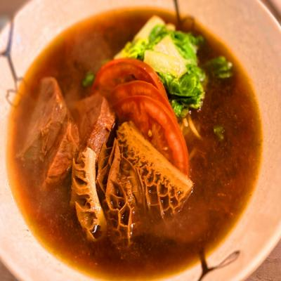

老私房
老私房
推薦程度： ★ ★ ★ ★ ★
推薦程度： ★ ★ ★ ★ ★
店家介紹
老私房牛肉麵是一道令人垂涎欲滴的台灣特色美食，以其濃郁的湯底、嫩滑的牛肉和彈牙的麵條而聞名。這道美食充滿了豐富的口感和深厚的風味，讓人愛不釋手。老私房牛肉麵的湯底是它的核心所在。湯底經過長時間的熬煮，以牛骨、牛肉和各種香料為基礎，慢慢釋放出濃郁的牛肉味道和深沉的香氣。湯底的口感醇厚，喝起來帶有一絲絲的甜味，令人陶醉其中。配以嫩滑的牛肉，老私房牛肉麵更添美味。牛肉經過精心處理，切成薄片或絲，煮熟後保持著肉質的柔軟和鮮嫩。每一口牛肉都能帶來滿滿的肉汁和牛肉的鮮香，與湯底相得益彰。麵條也是這道美食的重要組成部分。老私房牛肉麵通常使用寬而彈牙的麵條，讓您在咀嚼時能夠感受到麵條的彈性和口感。這種麵條與湯底的結合，使整道菜更加豐富多樣。除了牛肉和麵條，老私房牛肉麵還常常搭配蔥花、香菜、醬油蛋和酸菜等配料，這些配料的搭配使得這道菜更加美味豐富，滿足您的味蕾。總結來說，老私房牛肉麵以其濃郁的湯底、嫩滑的牛肉和彈牙的麵條成為台灣最受歡迎的美食之一。這道美食融合了濃厚的口感和深沉的風味，無論您是台灣本地人還是遊客，都絕對不能錯過品嚐這道令人回味無窮的特色美食。新北市三峽區國際一街66-1號1樓，電話： 02 8671 6200，營業時間：星期一至星期日 11:00-21:00
美食品項
| 品項 | 描述 |
|  |
牛肉麵店中的雙寶飯是一道令人垂涎欲滴的美食，以牛肚和牛腱為主要配料。這道料理將經過特殊處理的牛肚和牛腱搭配在一起，帶來一種豐富的口感和獨特的風味。牛肚是牛的胃部組織，具有軟嫩的口感和獨特的彈性。它經過細心的清洗和烹煮處理，切成薄片後，保留了其鮮味和嫩滑的質地。每一口牛肚都能帶來滿滿的肉汁和嚼勁，讓您的味蕾享受到獨特的口感。牛腱則是位於牛的前腿部位，肉質緊實且有濃郁的牛肉風味。它經過長時間的燉煮，讓肉質變得鬆軟多汁，帶有濃厚的肉汁和鮮美的口感。每一片牛腱都充滿了滋味，能夠讓您品嚐到細膩的牛肉口感。 除了牛肚和牛腱，雙寶飯通常還搭配其他配菜，例如醬油蛋、蔥花或酸菜等，增添了菜餚的層次感和風味變化。這些配菜與牛肚、牛腱和白飯的組合相得益彰，為您帶來豐富多樣的口味享受。
|